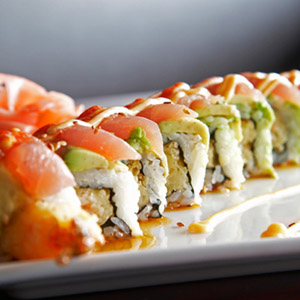
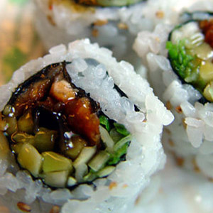

Spiral Ecstasy Roll
- Shrimp, crab stick and avocado rolled with salmon, yellowtail and tuna

Big Tempura Maki
- Shrimp, crab stick, unagi and avocado batter fried and wrapped in rice and nori
Cap'n Crunch Roll
- Tempura Pumpkin, golden radish and avocado wrapped in wasabi rice and nori
Kanki By The Sea
- Eel and avocado rolled in crab stick and tobiko, on a bed of seaweed salad with cream sauce

Banzai Roll
- Salmon, eel, octopus and avocado wrapped in rice and nori studded with ginger and carrots
Captain Cook Roll
- Langostino, crab, and ahi wrapped with pickled onion, carrot, and spicy radish in nori
Scallop Banzai Roll
- Salmon, eel, scallops hidden among carrots cucumbers and avocado, reverse wrapped in spicy nori with rice and sesame crunch

Tuna Rio
- Shrimp tempura, cream cheese, and spicy mayo in a reverse roll with tuna, baked and topped with hot sauce, jalapenos, sea salt
-
Captain & Tennille Roll
- Tempura Muskrat, Unagi, shiso, asparagus, avocado and cucumber wrapped with rice and cedar in nori, drizzled with 70's sauce
Sheila Maki
- Butterfish, butterbeans, crab, avocado, masago, spicy mayo reverse rolled with crispy tempura
Volcano Roll
- Crab stick, avocado and cream cheese rolled and covered with a unique spicy hot lava sauce
Captain Morgan Roll
- Rum-soaked Baby Eel, pineapple, jicama, wasabi rice and shiso in rolled in rice and spicy nori